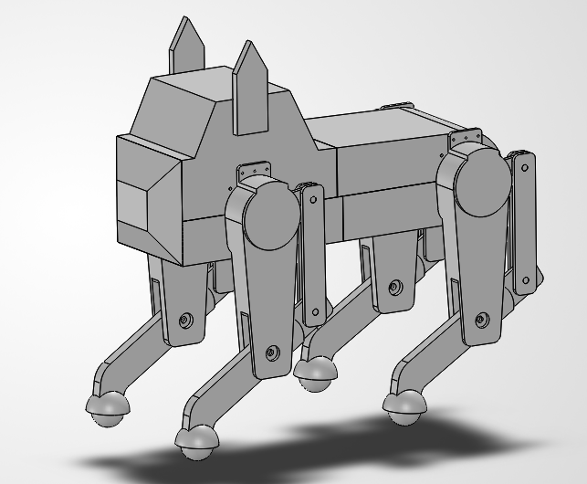
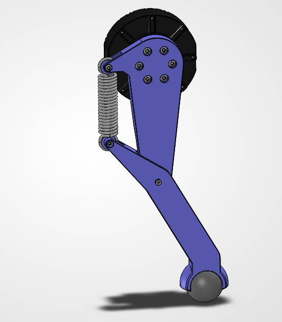
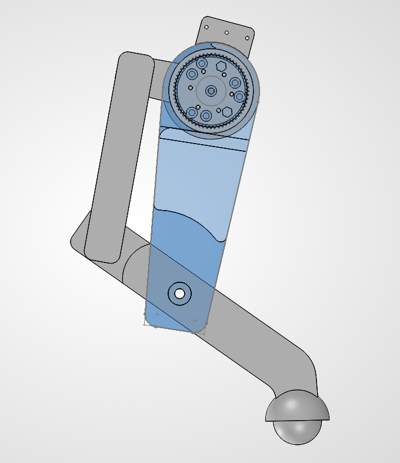
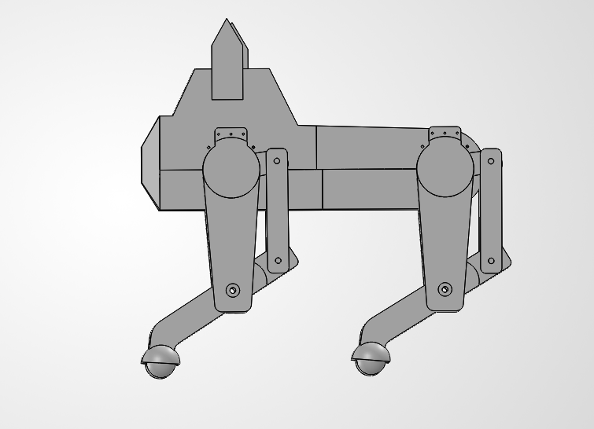

Humanoid Robot Club
Leading the quadruped project at Purdue’s Humanoid Robot Club: a team-built robot dog, from leg concepts to simulation.
- Role
- Quadruped Project Lead
- When
- Aug 2026 — Present
- Owned
- Mechanical design, motor selection, assembly, team coordination
- Sim
- MuJoCo, ROS / Gazebo
- Status
- Prototype walking; successor in design

The project
The quadruped is a team build inside Purdue's Humanoid Robot Club. The design, CAD and simulation work on this page is a collective effort — everyone on the project has worked to get the design and simulation off the ground.
My role
I lead the project. I manage every subteam — mechanical, electronics and simulation — and own the engineering decisions that tie them together, from which leg concepts move forward to how the robot's hardware and software come together.
Hands-on, I lead the mechanical design, motor selection and assembly. We use ROS and Gazebo simulation in design reviews and for motor integration, and MuJoCo to compare leg designs.
The first prototype
Our first prototype walks unsupported and can crouch while carrying an onboard NUC, the computer that will eventually run its vision.
A successor design built to jump.
The goal
The successor robot should see a table or raised platform, judge where it is, and jump onto it: a target of four times its own body height. That means pairing onboard vision with legs that can deliver a huge burst of power and still land cleanly — a hard problem on both the perception and hardware side. We're testing spring-assisted and linkage-driven legs in MuJoCo to find the design that can make that jump.
Work in progressLeg concepts
And the full-body CAD






